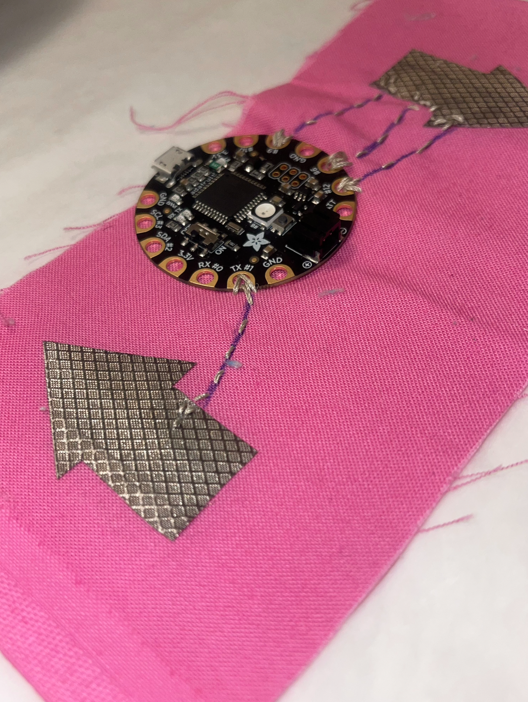
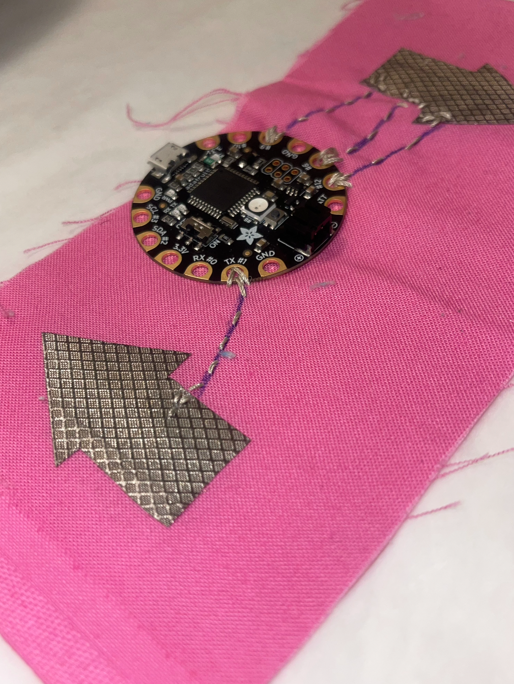

Musk's Mission
A custom game created for Astarte's soft body controller using Arduino and conductive materials.
Welcome to Astarte's Design page — where creativity meets technology through interactive and visual experiments.
A custom game created for Astarte's soft body controller using Arduino and conductive materials.
A digital exploration of personal data visualized through a neighborhood-style interactive game.
One of Astarte’s first experiments with game design — eerie, immersive, and unexpected.
Astarte’s plush controller was created using a Flora, conductive thread, and fabric. The device allowed intuitive physical play and inspired new forms of tactile interaction in digital art.
 
